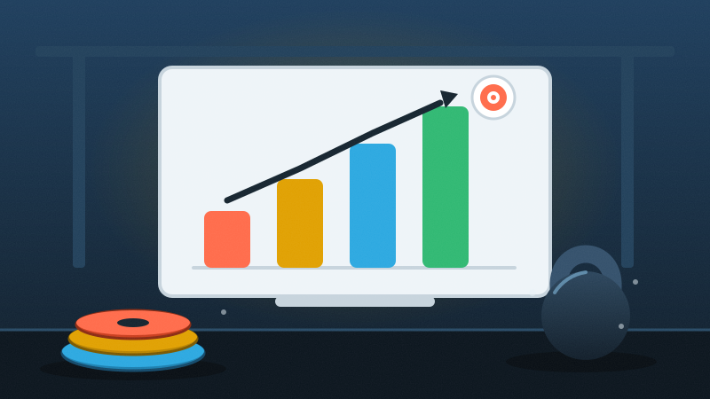

Méthode
Se fixer des objectifs qui font vraiment avancer
Tu t'entraînes depuis des mois mais tu as l'impression de faire du sur-place ? Le problème n'est peut-être pas ton programme, mais la façon dont tu définis ce que tu veux atteindre.
La majorité des pratiquants qui viennent me voir en disant "je stagne" n'ont en fait jamais posé d'objectif clair. Ils ont une intention vague — "me sentir mieux", "être plus fort" — mais rien de mesurable, rien de daté. Résultat : impossible de savoir si le programme fonctionne, impossible de savoir quand féliciter le boulot accompli. On va corriger ça.
01 — Diagnostic
Pourquoi l'objectif flou te fait tourner en rond
Un objectif qu'on ne peut pas mesurer est un objectif qu'on ne peut pas atteindre. "Être en forme" ne veut rien dire pour ton cerveau ni pour ton coach. Par contre "faire 10 tractions strictes d'ici 12 semaines" donne une direction, une échéance, et surtout un moyen de vérifier où tu en es chaque semaine.
Un objectif sans chiffre ni date, c'est juste un souhait.
60%
Part des inscrits en salle qui arrêtent dans les 6 mois quand ils n'ont pas d'objectif structuré et suivi
Ce chiffre n'est pas une fatalité, c'est un symptôme : sans repère de progression visible, la motivation s'effondre dès que la nouveauté s'estompe.
02 — Méthode
Les 3 types d'objectifs à combiner
Un bon plan d'entraînement mélange trois horizons de temps, pas un seul :
- L'objectif long terme (6-12 mois) : une compétence ou une perf qui te fait rêver (un marathon, un premier muscle-up, un total en powerlifting). - L'objectif moyen terme (4-8 semaines) : un cycle de travail concret qui sert le premier (gagner en force sur le squat, stabiliser le gainage). - L'objectif court terme (la séance) : ce que tu dois réussir aujourd'hui pour avancer sur le moyen terme.
Le court terme est celui qu'on néglige le plus, alors que c'est le seul sur lequel tu as un contrôle total chaque jour. Sans lui, le long terme reste un vœu pieux.
3
Court, moyen et long terme doivent être écrits, pas juste pensés
03 — Mesure
Suivre sans se raconter d'histoires
Le carnet d'entraînement reste l'outil le plus sous-estimé de la salle. Pas besoin d'un tableur d'ingénieur : trois lignes par séance suffisent — charge, répétitions, sensation (RPE sur 10). Ce qui compte, c'est la régularité de la mesure, pas sa sophistication.
Le piège classique : ne mesurer que la performance maximale (le 1RM, le meilleur temps) et ignorer la régularité. Un athlète qui progresse vraiment, c'est souvent celui qui répète des bonnes séances, pas celui qui explose un record isolé puis stagne trois mois.
1 séance sur 4
Constat courant chez les pratiquants qui "suivent" leur entraînement sans carnet réel
04 — Comparatif
Ce qui fait progresser, ce qui fait stagner
À faire
- noter charge et sensations après chaque séance
- revoir l'objectif toutes les 4 semaines
- choisir un objectif mesurable et daté
- accepter les paliers comme partie du plan
À éviter
- changer d'objectif toutes les deux semaines
- comparer sa progression à celle des autres
- viser uniquement le 1RM sans travailler le volume
- ignorer les signaux de fatigue pour "tenir" le chiffre visé
Un objectif tenu six mois vaut mieux que trois objectifs abandonnés en six semaines.
05 — Recap
À retenir pour construire ton prochain objectif
| Horizon | court, moyen, long terme combinés |
|---|---|
| Mesure | chiffré, daté, noté à chaque séance |
| Révision | tous les 4 à 6 semaines |
| Signal d'alerte | stagnation malgré respect du plan = ajuster la charge, pas l'objectif |